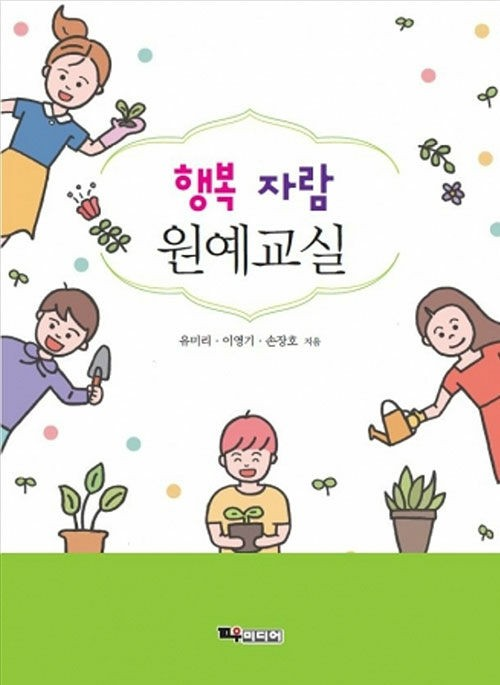

자람원예치료연구소
소장
JARAM · DIRECTOR PROFILE
자람원예치료연구소 소장 유미리. 복지원예 전문 강사이자 교육자로서 장애인, 어르신, 아동·청소년, 가족, 교사와 직장인 등 다양한 대상의 원예치료·원예교육을 이어왔습니다.
01 / CURRENT APPOINTMENTS
2026년 11월 제공 이력서에 기재된 소속과 직책을 기준으로 정리했습니다.
소장
복지원예사 양성과정 책임교수 (2025년 3월~)
치유농업사 양성과정 운영교수 (2024년 4월~)
이사 · 경북지회 부지회장
02 / EDUCATION & QUALIFICATIONS
학위, 자격 취득, 교육 수료 내역을 구분하여 표기합니다.
03 / AUDIENCES & LECTURES
이력서에서 강의 기관 가운데 대상별 대표 사례를 발췌했습니다. 기재 기관은 현재 제휴·계약 상태를 뜻하지 않습니다.
주간보호센터·재활센터·특수학교·보호작업장 원예치료
복지관·요양시설·치매안심센터·농촌건강장수마을 프로그램
유치원·학교·교육지원청 Wee센터 원예교육 및 특별교육
다문화가정, 장애자녀와 부모, 학부모 대상 가족 활동
교사연수·에듀힐링·대학생 및 지역주민 교육
감정노동자·의료 및 복지 현장 프로그램
04 / TEACHING & FIELD CAREER
기재된 운영 기간을 반영했습니다. ‘현재’는 2026년 11월 작성 이력서의 표기입니다.
05 / RESEARCH & PUBLICATIONS
포스터·구두 발표와 연구참여, 집필과 출간을 구분합니다.

초등교과 연계 원예교육 프로그램 소개 도서
출판사에서 보기 ↗06 / HONORS & MEDIA
이력서에 기재된 수상, 강연 및 방송 출연 내역을 정리했습니다.